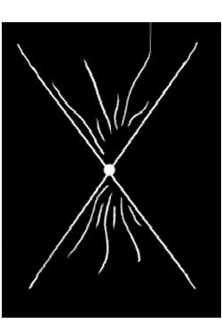

27 Απριλίου 1999
Διαπίστωσες, αγαπημένη, πως η πραγματική διαμάχη είναι κάτι που συμβαίνει εσωτερικά στον άνθρωπο και δεν εμπλέκει στην ουσία άλλους. Όταν ο άνθρωπος βρεθεί σε ανισορροπία εσωτερική, τότε κατευθύνει τα κύματα της διαταραγμένης του ενέργειας προς τα έξω, με συνέπεια να εμφανίζεται αυτό στο άμεσο περιβάλλον του ως τεταμένες σχέσεις με τους άλλους. Γι' αυτό, ο άνθρωπος που βιώνει την αληθινή γαλήνη δεν αντιμετωπίζει διαταραχές ούτε και στις σχέσεις του, ακόμα και αν συναναστρέφεται πρόσωπα που τον προκαλούν. Ο άνθρωπος αυτός μπορεί να αποδεχτεί τους συνανθρώπους του όπως ακριβώς εκείνοι είναι, και μπορεί επίσης να ομιλήσει μαζί τους, εφόσον, όντας σε υψηλότερη δόνηση απ' αυτούς, μπορεί να τους υπερκαλύψει. Αυτό συμβαίνει και όταν ένας Διδάσκαλος επιθυμεί να συνομιλήσει με έναν άνθρωπο: τότε το φαινόμενο της υπερκάλυψης του επιτρέπει να έρθει άμεσα σε επαφή μ' αυτόν μέσω της γλώσσας του, ακριβώς όπως σε κάθε ευρύτερο σύνολο εμπεριέχονται τα υποσύνολά του. Έτσι, «ταυτιζόμενος» ο Διδάσκαλος με τον άνθρωπο του μιλά σαν να επρόκειτο για την ίδια τη φωνή του ανθρώπου.
Βαδίζεις το δρόμο της αυτοεκπλήρωσης. Αυτά που συναντά ο άνθρωπος στη ζωή του δεν είναι μόνο αυτά που «αξίζει», αλλά και κάποια που χρειάζεται να συναντήσει για άλλους λόγους, όπως, για παράδειγμα, για να τα γνωρίζει όταν χρειαστεί κάποτε στη συνέχεια να τα μεταφέρει σε άλλους ανθρώπους, ή επειδή το κάρμα του συνδέεται με το κάρμα ανθρώπων που βρίσκονται σε άλλη πορεία και αυτό έχει έμμεση επιρροή στη δική του ζωή, ή, ακόμα, επειδή το έχει ο ίδιος επιλέξει έμμεσα, όταν επέλεξε άλλα στοιχεία – δηλαδή, κάποιος που επέλεξε να γεννηθεί σκαπανεύς μιας Τέχνης και μοιραία αντιμετωπίζει και την απόρριψη των συγχρόνων του. Επομένως, οι καταστάσεις που αντιμετωπίζεις δεν αποτελούν ικανό κριτήριο για να αξιολογήσεις τον εαυτό σου. Αποσυνδέσου από την αυτο-απόρριψη και τις ενοχές και μην ταυτίζεσαι με το τώρα, το οποίο αποτελεί απλώς έναν κρίκο σε μια τεράστια αλυσίδα. Τότε μόνο πρέπει να ελέγχεις τα βήματά σου, όταν νιώθεις πως η εξέλιξή σου έχει σταματήσει. Τότε σημαίνει πως πρέπει να επιτρέψεις στην καρδιά σου να σου μιλήσει για το δρόμο της Ζωής. Όσο τον βαδίζεις δεν πρέπει να απασχολείσαι παρά μ' αυτόν, και όχι με αξιολογήσεις άκαιρες και επιφανειακές. Εκείνος που περπατάει το βουνό δεν μπορεί να το δει από ψηλά.
Γνωρίζετε πια αρκετά για τον Άνθρωπο και τον Θεό. Ο Άνθρωπος είναι εκείνος ο κρίκος που συνδέει τον κόσμο του άυλου με τον κόσμο της ύλης. Είναι εκείνο το Εν από το οποίο ξεκινούν οι δύο κόσμοι και εκτείνονται προς το άπειρο, και σ' αυτό είναι εικόνα του Θεού, αφού είναι και εκείνος (ο άνθρωπος) όπως Εκείνος (ο Θεός) το Εν, η αρχή, η υπέρπυκνη στιγμή του δυνάμει. Γι' αυτό ο άνθρωπος είναι τέλειος, αφού έχει την ίδια ταυτότητα με τον Θεό, και αυτή η ζωή του δίνει τη δυνατότητα να εκδηλωθεί στην ύλη και μετά να μεταλλάξει την ύλη σε άυλη ενέργεια, δηλαδή να συνενώσει τους δύο κόσμους, ως γέφυρα όπου συνειδητά συνλειτουργούν τα στοιχεία αυτών των κόσμων.
Αναζήτησε την ευτυχία σου στην εξισορρόπηση. Αγάπησε τον κόσμο που δημιούργησες μέσα σου, όπως ο Θεός αγάπησε τον κόσμο που δημιούργησε μέσα Του. Όταν μπορέσεις να απεξαρτηθείς από την ανάγκη του Θεού, τότε θα Τον έχεις βρει οριστικά.
Ο Υιός